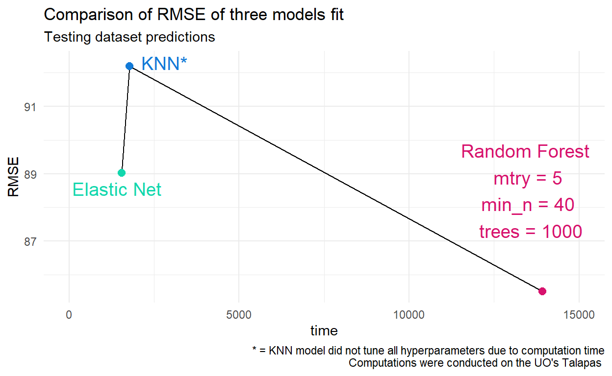

Overview
In this post we are going to describe our process for the three machine learning models that we ran (e.g., penalized regression, k-nearest neighbor, random forest) and compare the performance of all models. The results that are presented are from the full dataset described in the previous post. Check it out here.. Since the full dataset was so large, we utilized a High Performance Computing (HPC) cluster from the University of Oregon (Talapas) to run all models.
Split the Data
Before we start fitting models, the first step is to split our data into two parts: training and testing data. To do this, we use initial_split to split the data and then define our training and testing set. Notice that we also used stratified sampling (strata = "score") when splitting our data to ensure the training and testing sets have similar outcome responses.
set.seed(1272020)
d_split <- initial_split(d, strata = "score")
d_train <- training(d_split)
d_test <- testing(d_split)Then, we take our testing set and create a k-fold cross validation object. This splits our training set into 10 different samples of data each with their own training and testing set. We will use this object to evaluate the performance metrics for each model across all 10 samples.
set.seed(1272020)
train_cv <- vfold_cv(d_train, strata = "score")Define the Recipe
This recipe is explained in the previous post. However, we provided the code here as well for completeness. We will use this same recipe for all models.
rec_yoself <- recipe(score ~ .,data = d_train) %>%
step_mutate(tst_dt = as.numeric(lubridate::mdy_hms(tst_dt))) %>%
update_role(contains("id"), ncessch, new_role = "id vars") %>%
step_unknown(all_nominal()) %>%
step_novel(all_nominal()) %>%
step_dummy(all_nominal()) %>%
step_nzv(all_predictors()) %>%
step_normalize(all_numeric(), -all_outcomes(), -has_role("id vars")) %>%
step_medianimpute(all_numeric(), -all_outcomes(), -has_role("id vars")) %>%
step_interact(terms = ~lat:lon) %>%
step_nzv(all_predictors())Model 1: Old Faithful - Penalized Regression Model
Finally, we are ready to create our first model. This will be a penalized regression, specifically an elastic net model. Linear regression models are usually easier to interpret and less computationally intensive.
To run an enet model, you must specify the penalty argument (for dealing with multicolinearity) and the mixture argument (proportion of ridge [0] to lasso [1] models). For our purposes, we will tune these parameters to find the values that result in the best model performance.
lr_mod <- linear_reg() %>%
set_engine("glmnet") %>%
set_mode("regression") %>%
set_args(penalty = tune(),
mixture = tune())Workflow
After specifying our enet model, we use the workflow package to combine our recipe and our model into one workflow object. This makes it easier to monitor and update your recipe and model that you are working with.
lr_flo <- workflow() %>%
add_recipe(rec_yoself) %>%
add_model(lr_mod)Tune Model
We are now ready to tune our enet model. To tune the model we first need to create a grid for tuning parameters. Since we are using a linear regression model, we decided to use a regular grid with our two hyperparameters (penalty() and mixture()). We also specified 30 levels (i.e., 30 values for each hyperparameter) to create the grid.
#create grid
lr_grd <- grid_regular(penalty(), mixture(), levels = 30)
#tune model
tictoc::tic()
lr_res <- tune::tune_grid(lr_flo, resamples = train_cv, grid = lr_grd,
control = tune::control_resamples(save_pred = TRUE))
tictoc::toc()When we ran the previous model on the HPC cluster, it only took 26 minutes to tune. The values that lead to the highest performance (i.e., lowest RMSE) for our tuning parameters were:
Penalty = <0.00
Mixture = 0.03
Note: Because both values are so low, we would expect to get very similar results with a ridge regression model and it would be less computationally intensive.
Apply Best Tuning Parameters
We can then apply these values to our arguments in our model with the select_best function. Remember to update and finalize your workflow with the new model as well.
#select best tuning parameters
lr_best <- lr_res %>%
select_best(metric = "rmse")
#finalize model in workflow
lr_flo_final <- finalize_workflow(lr_flo, lr_best)Model 1 Results
Once we have finalized our model and workflow, we can use the last_fit() function to apply our recipe and model to the initial_split object we made. This will evaluate the model performance on the testing set. We then use the collect_metrics() function to view our performance metrics on the test set.
#evaluate on test set with last_fit
lr_final_res <- last_fit(
lr_flo_final,
split = d_split)
#view performance metric
lr_final_res %>%
collect_metrics() %>%
filter(`.metric` == "rmse")
# A tibble: 1 x 4
.metric .estimator .estimate .config
<chr> <chr> <dbl> <fct>
1 rmse standard 89.0 Preprocessor1_Model1As you can see, our final performance metric (RMSE) for our penalized regression model is 89.03.
Get Predictions
We also wanted to note that if you wanted to extract predictions from the test dataset within the split object (e.g., d_split), you can use the collect_predictions() function.
test_preds <- lr_final_res %>% collect_predictions()
test_predsModel 2: Meet the Neighbors - K Nearest Neighbor (KNN) (AN)
We’ll use the same data and recipe from our first Model - This way, we can see whether improvements to model fit are actually due to an improved model.
A K nearest neighbor (KNN) model aims to find the closest neighbors, or closest data points in the predictor space. This means that the model uses information from previous samples to find the points that are closest in proximity to the new sample. While KNN models can be computationally inefficient, they make fewer assumptions about the data and may be preferable when datasets are nonparametric, or where distributions are largely unknown. We chose this model for our case because many of our predictors are non-parametric and our dataset is very large.
knn_mod <- nearest_neighbor() %>%
set_engine("kknn") %>% When specifying the model, we set the mode to “regression”. This tells it to take the average outcome of K cases, rather than the mode. Because our outcome is continuous, we went with the regression method.
#knn_mod <- nearest_neighbor() %>%
# set_engine("kknn") %>%
set_mode("regression") %>%Next we determine how to identify the neighbors. The defaults from the {kknn} package include 5 neighbors, set the weight_func to “optimal”, and the dist_power() to “2”.
If K is small (e.g., 1), there is greater potential for over-fitting as it is more susceptible to changes in the data (think low bias but high variance). Larger values of K means the model will be looking at potentially irrelevant data points. This can be helpgul when data are noisy, but not always. Think high bias, and low variance.
The weight_func determines how to weight the distances between samples. In other words, it determines whether or not to penalize for a point being farther away.
The dist_power function specifies how far points should be.
Here, we set each of these parameters to ‘tune()’, so that the model could determine the best values based on the data.
#knn_mod <- nearest_neighbor() %>%
# set_engine("kknn") %>%
# set_mode("regression") %>%
set_args(neighbors = tune()),
weight_func = tune(),
dist_power = tune())Unfortunately, setting all three parameters to ‘tune()’ was computationally inefficient. That is, it took longer than 16 hours to run on a cluster computer. So, we removed the tuning parameters for ‘weight_func’ and ‘dist_power’, and left these to the defaults. We felt it was important to tune the neighbors however.
knn_mod <- nearest_neighbor() %>%
set_engine("kknn") %>%
set_mode("regression") %>%
set_args(neighbors = tune())#,
#weight_func = tune()#,
#dist_power = tune())Woohoo! Model = specified! Now to create a workflow and start running things. Here we use a workflow to bundle our preprocessing and modelling together. We’re using the same recipe as before, ‘rec_yoself’, and the model we just created, ‘knn_mod’.
knn_flo <- lr_flo %>%
update_model(knn_mod)We aimed to use a space-filling design when specifying our non-regular grid. This type of design aims to keep potential points away from each other while also encompassing the entire parameter space. Here, we specify the parameters, as well as the range for neighbors, prior to creating the grid. (*Note - this is prior to removing the tuning parameters above)
knn_par <- parameters(neighbors(range = (c(10, 75))), weight_func(), dist_power()) #testing with smaller range due to computation
knn_grd <- grid_max_entropy(knn_par, size = 30)Unfortunately, this too contributed to a computationally inefficient model. So, we used the defaults for grid_max_entropy() and only specified neighbors() and size of the grid.
#knn_par <- parameters(neighbors(range = (c(10, 75))), weight_func(), dist_power()) #testing with smaller range due to computation
knn_grd <- grid_max_entropy(neighbors(), size = 30) #testing with smaller size due to computation Finally, we are ready to tune our grid according to our cross-fold validated data. We specify our workflow (knn_flo), the resamples we want the model to use (train_cv), and the grid we created above (knn_grd).
You’ll notice in between the hashtags, we include some code to employ parallel processing. This allows the model to run on each sample simultaneously, in an attempt to cut down on computation time.
#
cl <- makePSOCKcluster(all_cores)
registerDoParallel(cl)
foreach::getDoParWorkers()
clusterEvalQ(cl, {library(tidymodels)})
#
knn_res <- tune::tune_grid(knn_flo, resamples = train_cv, grid = knn_grd,
control = tune::control_resamples(save_pred = TRUE))
#
parallel::stopCluster(cl)
#Lastly, we want to select the best tuning parameters and use them to finalize the workflow. As you may have guessed, the only tuned parameters are the number of neighbors - since both the dist_func and weight_func were too computationally expensive to move away from defaults. The optimal number of neighbors for our model was 10.
knn_best <- knn_res %>%
select_best(metric = "rmse")
knn_flo_final <- finalize_workflow(knn_flo, knn_best)
registerDoSEQ()
knn_final_res <- last_fit(
knn_flo_final,
split = d_split)
knn_final_res %>%
collect_metrics()Since we ran our model on the HPC, we are reading in our model first.
Our final performance metric (RMSE) for our KNN regression model is 92.20. Yikes! This metric is not so great, but our total elapsed time of 1772.517 seconds on a cluster computer is pretty amazing. The high RMSE may be due to our leaving in the defaults for dist_power() and weight_func when tuning our model. Next steps, if time allowed, would include tuning just the weight_func, and specifying a value for dist_power based on the Manhattan measure (since most of our predictors are categorical).
Model 3: Lost in the Forest - Random Forest (JP)
Okay, so we’ve tested a elastic net regression and a KNN model. We’ve seen how simple to implement the elastic net regression was and we’ve experienced the waiting game of running a KNN model. 
Let’s move on to our final model, a random forest model. Now, what is a random forest model? Random forest stems (ha!) from a decision tree but rather than have one tree, we will have 1000 trees.

Random forest is also different from bagged trees because while there are multiple trees, bagged trees aggregates the predictions across all trees and has the issue of correlations between the nodes for trees. So random forest reduces correlations between trees by making sure trees are different from one another by including randomness at each split in the tree. Random forest was also chosen over bagged trees because it is faster, although it might not feel like it based on our final plot. The two hyper-parameters that were tuned for our random forest model were the mtry and the min_n parameters. Mtry is important because it is the main parameter of dealing with tree correlation by making sure the predictors chosen for the root nodes are different each time rather than only picking a handful of predictors as the root node. Min_n is important because this parameter decides whether or not the node splits further to make deeper trees. While not tuned, the number of trees was set to 1000 rather than the default of 500. From this model, we will be able to see which nodes are the most important predictors for students’ scores. Lastly, model performance will be assessed by RMSE to compare to the other two models’ performance.
When creating a random forest model, there are some additional arguments that are needed. First, it is important to use as many cores on your local computer as you can so you’re not waiting for forever while this model runs. The permutation argument is important for splitting and considers any variable important if it makes the predictive accuracy better and repeats it for each predictor.
(cores <- parallel::detectCores())
model_of_forests <- rand_forest() %>%
set_engine("ranger",
num.threads = cores, #
importance = "permutation",
verbose = TRUE) %>%
set_mode("regression") %>%
set_args(mtry = tune(),
trees = 1000,
min_n = tune())Next, we’ll update our existing workflow object to examine the random forest model in the previous code chunk. Now that we have our workflow created, we can then run the model and recipe to get the best RMSE value. We also set the grid to 10 to get 10 values of our hyper-parameters.
forest_flo <- knn_flo %>%
update_model(model_of_forests)
tictoc::tic()
tune_random_trees <- tune_grid(
forest_flo,
resamples = train_cv,
grid = 10,
metrics = metric_set(rmse),
control = control_resamples(verbose = TRUE,
save_pred = TRUE,
extract = function(x) x))
tictoc::toc()
train_best <- select_best(tune_random_trees, metric = "rmse")Now that we have the best values for our hyper-parameters and have our RMSE, we can then finalize our workflow and run the last_fit to see how the random forest performed.
train_wf_final <- finalize_workflow(
forest_flo,
train_best
)
tictoc::tic()
train_res_final <- last_fit(train_wf_final,
split = d_split)
tictoc::toc()
train_res_final %>%
collect_metrics()Model Fits
Now that we have examined all three different models using a small percentage of the actual data, we can discuss which model fits the data best. While it may be different for based on using a small percentage, if you happen to have a supercomputer, you can analyze the full dataset. In the following code chunk, we gathered information about the RMSE, which is the fit metric we are using, the amount of time it took to run the model with all the data, and the name of the model. We can see that the best fitting model is the random forest.

model_metrics <- tibble('model' = c('Elastic Net Regression', 'KNN', 'Random Forest'),
'time' = c(1552.90, 1772.52, 13919.06),
'rmse' = c(89.02, 92.20, 85.50))
ggplot(model_metrics, aes(time, rmse)) +
geom_line() +
geom_point(aes(color = model), size = 2.5) +
xlim(0, 15000) +
annotate("text", x = 1400, y = 88.55, label = "Elastic Net", size = 5, color = '#12D7AD') +
annotate("text", x = 2800, y = 92.30, label = "KNN*", size = 5, color = '#127AD7') +
annotate("text", x = 13500, y = 88.5, label = "Random Forest \n mtry = 5 \n min_n = 40 \n trees = 1000", size = 5, color = '#D7126D') +
labs(title = 'Comparison of RMSE of three models fit',
subtitle = 'Testing dataset predictions',
y = 'RMSE',
caption = "* = KNN model did not tune all hyperparameters due to computation time\n Computations were conducted on the UO's Talapas ") +
theme_minimal() +
theme(legend.position = "none") +
scale_color_manual(values = c('#12D7AD', '#127AD7', '#D7126D'))
However, it is important to note that while the random forest model was the best performing model, it also took substantially longer to run. This was also a determining factor in how many parameters we could tune in the KNN model, as it was computationally exhausting to run. Overall, the random forest was enough of a better performing model that we think it was best to run that over a penalized regression model. While feature engineering changes could have probably resulted in a better fitting model for all three, this blog was to compare the models with the same recipe. So if you decide to fit these three models, some takeaways are:
Feature engineering is an important to step to get the most out of your models. It also helps if you have background information regarding the data you are working with.
Think about the pros and cons of a better performing model and the time it takes to run the model.
Experiment with other models not shown here.
Try to find as much relevant data as possible to help in predicting your outcome of interest.